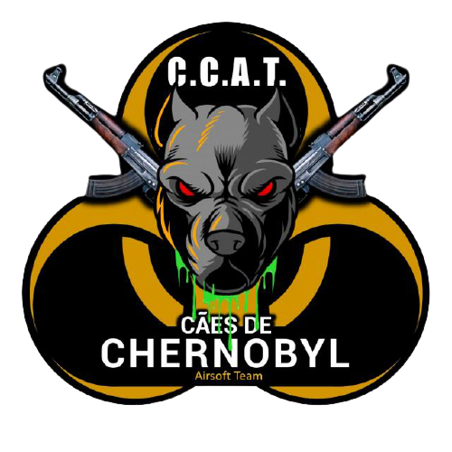

<!doctype html>
<html lang="pt_BR"></html>
<head>
    <meta charset="UTF-8"/>
    <meta name="viewport" content="width=device-width, initial-scale=1.0"/>
    <link rel="stylesheet" type="text/css" href="style.css">
    <title>Cães de chernobyl</title>

</head>
<body>
    <header>
        <div class="logo"></div>
        <div class="menu waves-effect">
          <input type="checkbox" id="check">
                 <label for="check">
                    
                 </label>
          <nav>
            <ul>
                <li><a href="index.html">HOME</a></li>
                <li><a href="sobre.html">sobre o time</a></li>
                <li><a href="airsoft.html">sobre o airsoft</a></li>
                <li><a href="regras.html">regras do time</a></li>
                <li><a>eventos</a></li>
                <li><a>operadores oficiais</a></li>
                <li><a>recrutas</a></li>
                <li><a>marcar jogos</a></li>
                <li><a>votação</a></li>
                <li><a  href="contato.html">contato capitão</a></li>
             
           </ul>
          </nav>
        </div> 
    </header>

    <div class="regras">
        <h1>Regras do time<h1><br>
            <ol>
                <li>Honestidade em todos os games, não toleramos highlander.</li><br>
                <li>Segurança em primeiro lugar, arma sem mag na safe, sempre travada e quando em game sempre com óculos de proteção.</li><br>
                <li>Paz, evitar discussões com outros membros, operadores fora do time e o campo.</li><br>
                <li>Respeito, sempre respeitar as regras do cqb/operações, campo e operadores</li><br>
                <li>O fps das armas devem estar dentro dos padroes pré-estabelecidos dos campos</li>
            </ol>
    </div>
</body>